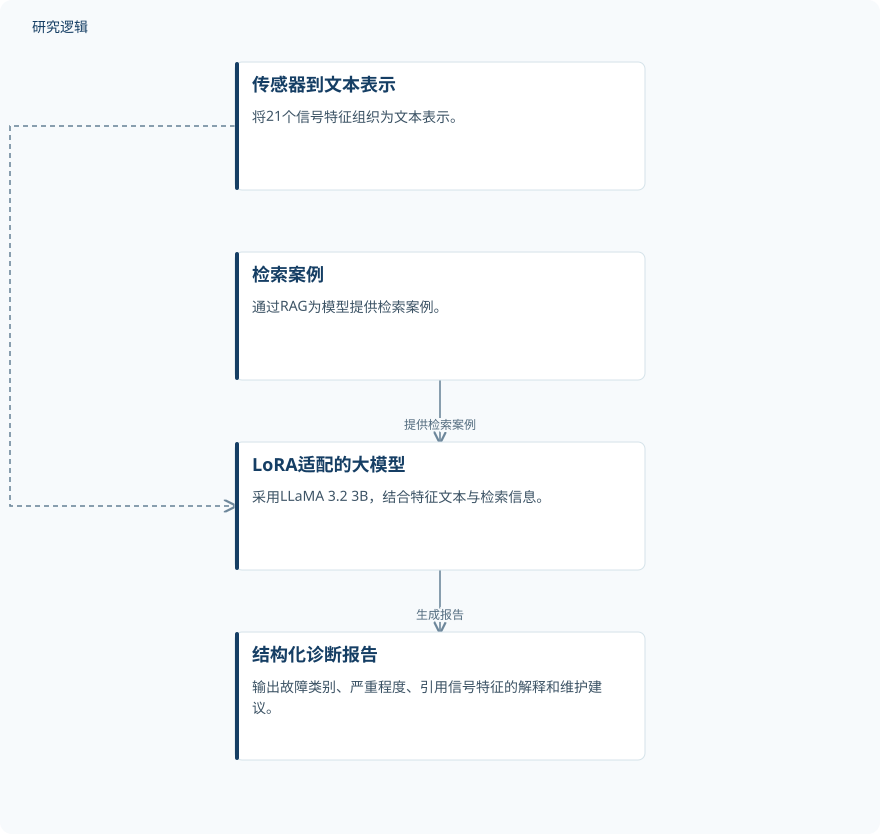

摘要解读
融合检索增强与低秩微调大语言模型的结构化轴承故障诊断
RAG-augmented LoRA fine-tuned LLM for structured bearing fault diagnosis in Industry 4.0 predictive maintenance
解读更新 2026-11-10 11:18 · 依据公开摘要整理，未核验全文细节
轴承故障诊断不仅要判断故障类别，还需要把信号依据转化为可阅读的维护报告。这项研究结合检索增强与大模型微调，展示了结构化诊断的实现方式，也明确呈现了它与传统分类模型之间的性能差距。
文章目录
从故障分类走向结构化诊断报告
本文关注的输出不只是故障标签，而是同时包含故障类别、严重程度、引用信号特征的解释和维护建议。阅读价值在于：摘要既报告分类性能，也提示不能把报告的语言表现直接等同于诊断可靠性或人类可解释性。
把传感器特征、检索案例与LoRA结合
研究将21个特征组织为传感器到文本的表示，结合检索增强生成（RAG）与LLaMA 3.2 3B的低秩适配（LoRA），生成结构化报告。摘要明确了这些组成环节，但未展开特征定义和检索文本的具体构成。
严格跨负载实验中，LoRA训练、验证及检索索引仅使用0–1 HP记录，评估使用完整的2–3 HP集合。训练时每条提示包含三个检索案例，推理时则对同一个适配器分别开启和关闭检索；这不是两个独立训练模型之间的比较。
依据摘要整理的结构化诊断流程


概括摘要明确给出的传感器文本表示、案例检索和大模型报告生成关系，不是论文原图。
下载 SVG图示关系说明
实线表示相邻阶段的信息流，虚线表示跨阶段联系或反馈。
传感器到文本表示 → LoRA适配的大模型：提供特征文本；检索案例 → LoRA适配的大模型：提供检索案例；LoRA适配的大模型 → 结构化诊断报告：生成报告
检索改善跨负载表现，但未超越分类基线
在按文件划分的CWRU实验中，大模型的宏平均F1为78.45%，低于SVM的93.15%和随机森林的91.21%。因此，生成更丰富的报告并不意味着故障分类性能更高。
在严格跨负载实验中，种子42下，检索使宏平均F1从19.91%升至67.89%；另外五个训练种子中，检索也均带来改善。不过，SVM、随机森林及紧凑的原始信号InceptionTime网络仍然更准确。单种子检查中，检索深度和句子编码器变化对宏平均F1影响较小。
在Paderborn上，固定的CWRU训练模型仅达到21.02%的宏平均F1；使用目标域LoRA微调及目标域专用FAISS索引后，达到77.33%，仍低于随机森林的80.39%。摘要明确将后者界定为目标域适配，而不是跨数据集泛化。
跨域适配、样本独立性与解释性仍需区分
Paderborn划分实现了记录互不重叠，但没有实现轴承互不重叠。仅凭摘要，无法判断独立轴承数量、各类别样本构成，以及结果对更广泛设备和工况的适用范围；也不能将评估窗口视为独立轴承样本。
运行元数据及预期频率文本的贡献尚未确立，检索深度与编码器的检查也限于单种子。摘要不足以判断严重程度、解释和维护建议分别经过何种验证；可读性指标只描述语言复杂度，不能证明人类能够理解或有效使用这些报告。
阅读启发：分别审视分类、报告与泛化
阅读启发：可进一步关注检索案例怎样支撑报告中的信号解释，以及严重程度和维护建议如何被评价。判断应用价值时，应将分类准确性、报告可用性和跨设备泛化分开阅读，尤其不要把目标域适配后的成绩当作模型直接迁移的能力。
以上为本站阅读启发与建议，不是论文已验证的结论。